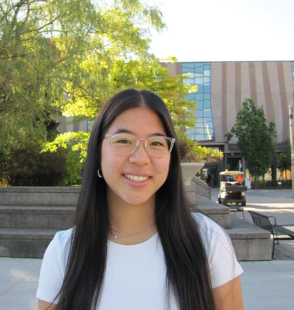
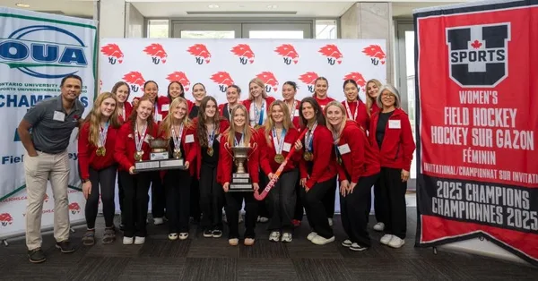
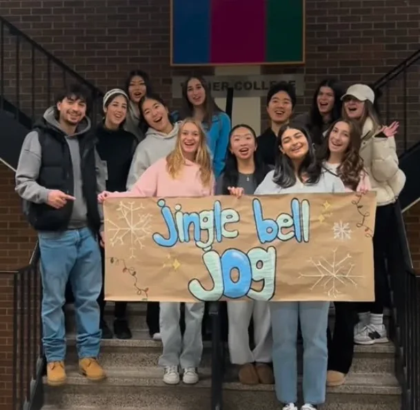
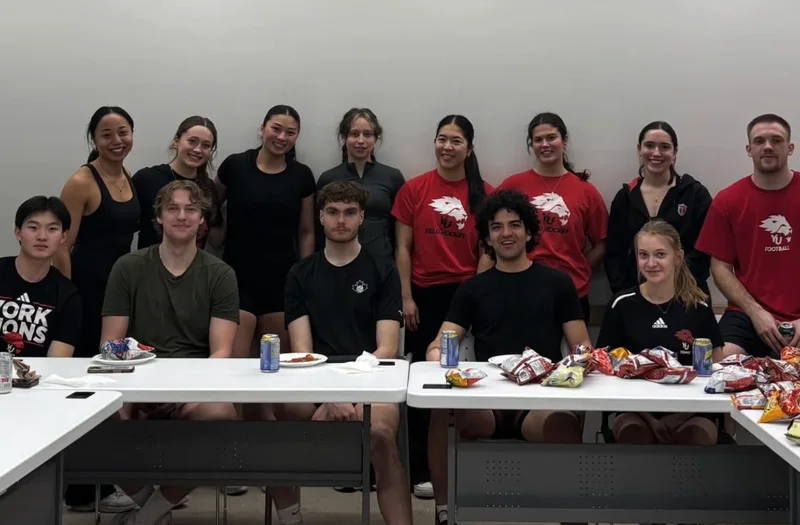
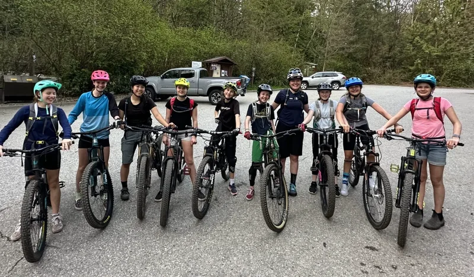
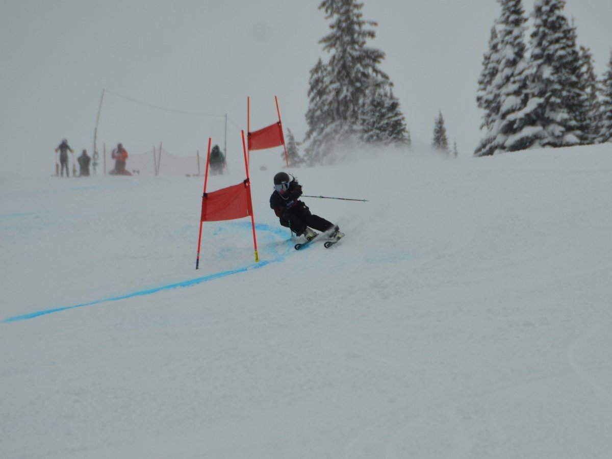
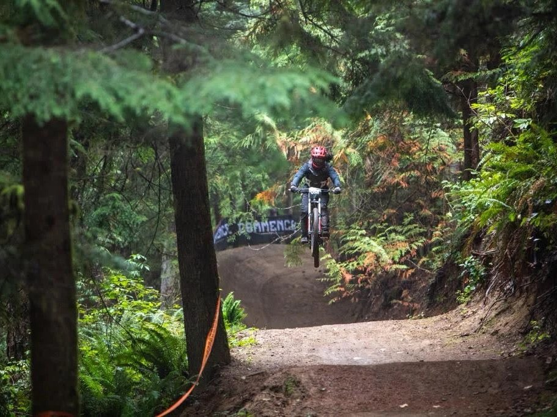

Tessa Wang
Welcome to my personal website. This is where I post my projects, research, writing, and anything else on my mind.
read more ↓

About me
I'm a Business Administration student at the Schulich School of Business at York University, specializing in Data Analytics and Finance, and I play on the Varsity Field Hockey Team.
I grew up in Vancouver, where I took the photos on this site, and moved to Toronto for school and sport. I'm now looking to start my career on the business side of tech.
Life
Loan Review Agent: Built an AI agent in Python for the Asset Management team at ACM Advisors. Designed to write loan performance commentary across a $5.5B AUM commercial real estate portfolio.
The AI Money Web: An interactive map of the money flowing between the companies building AI: chip deals, equity stakes, cloud contracts and debt.
Word of the Day: An app for my friends, because I like asking people what one word describes their day. Everyone posts one word a day and sees each other's.
Professional
-
Real Estate Analyst
ACM Advisors Ltd. · Toronto
May – Aug 2026
-
Sales and Marketing Support Intern
Freedom Marine International Yacht Sales · Vancouver
May – Aug 2025
-
Royalty Accounting Assistant
Loud Crow Interactive · Vancouver
Jun 2018 – Jun 2024
I work with Professor Andrew Maxwell at York's Lassonde School of Engineering on research around technology, innovation, and commercialization, published through the Innovation Doctor Substack.
I'm also helping turn an Innovation & Creativity course into an online format for an AI learning platform.
Innovation Doctor Substack ↗
I enjoy writing about business, technology, psychology, and other topics.
Tessa's Substack ↗
Articles
-
I wanted to learn what this “AI” thing was about. So I read The Scaling Era.
Read on Substack ↗ -
Why Being Busier Can Actually Make You More Productive
Read on Substack ↗
-
Varsity Field Hockey
York University
- U SPORTS (Gold, Silver) and OUA (Gold, Silver, Bronze) medalist
- Previously on the Canadian U18 National Team
Sep 2024 – Present

-
Chapter Vice President
Bags of Promise at York University
Student-led charity focused on supporting youth experiencing homelessness
Bags of Promise ↗Sep 2025 – Present

-
Internal Events Coordinator & Mentor
Sport Council at York University
- Coordinate internal York and Varsity Athletics events for 450+ student-athletes
- Mentor first-year student-athletes through weekly meetings
Mar 2025 – Present

I ski raced with the Grouse Mountain Tyee Ski Club for 10 years (from 2012 to 2022). Racing taught me the concept of growth mindset, which has vastly changed how I approach goals. After racing, I coached the club’s U10 & U12 athletes, then switched to freestyle in 2023. This is where I learned to backflip on skis!
My passion for mountain biking started during COVID, when my friends and I would bike every day on the mountain we lived at the base of. I did some downhill and enduro races and coached at Endless Biking. That’s where I met my co-founder, Em, and we decided to start HopOn.
-
HopOn North Vancouver
with Cycling BC
Co-launched a biking program for girls, focused on confidence, resilience, and teamwork.
2023 – 2024

-
Ski Racing Coach · Grouse Mountain Tyee Ski Club
Dec 2021 – Apr 2024
-
Mountain Bike Instructor · Endless Biking
Jun 2021 – Jun 2023

